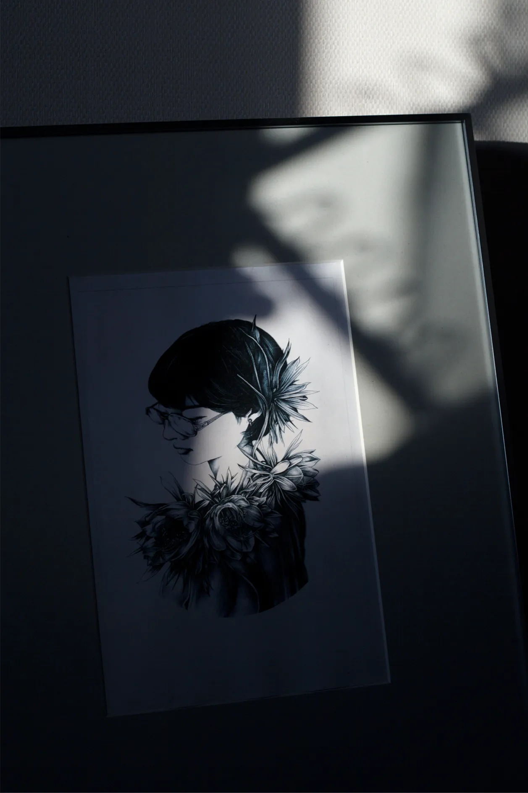

UUTA
シャープペンで描かれる人物画の
髪の毛や線の美しさに惹かれ、
アカウントをフォローしたのがはじまりでした
自分とUUTAさん、
好みの物は似ているようで
ちょっとずつ違ったりするのですが
好きなものに対しての「熱量」や「距離感」
自身にとっての「心地さ」を掴み取る感覚
「面白さ」や「ツボ」の拾い方、など
そもそもの部分で共有できる感覚が
かなり近いんですよね
だからこそ
UUTAさんから生まれる作品や作風が
美しいと感じるし、しっくりくるんだと思います
この人物画は直接依頼し、
自分（微糖）をモデルに作成していただいた作品です
伏し目の感じや髪質の重さ
驚くほど細かく特徴を捉えているのも
技術として感動したのですが
SNSに載せている写真から連想し
装飾に｢月下美人の花｣を選んで描いてくれたんです
そうやって、描く人の内面を理解しようとし
描こうとしてくれるという、その向き合い方自体が
とても嬉しくて、大切な宝物になっています
気ままに何処までも散歩したり
いろんなジャンルの映画をみたり…
( 知人のなかで恐らく一番映画をみている
それ故に、話の拾い方や返し方がうまい )
視野が広い人なので
これからも絵柄や表現方法は
変わっていくのかなと思いますが
小さい頃からずっと絵を描き続けてきたように
これからも、描き続けるだろうけど
これからも、描きつづけてほしい ！
そんな人です
「なんだかよく分からないけど
爆発的な力を持った個体」
として自分も頑張ります
